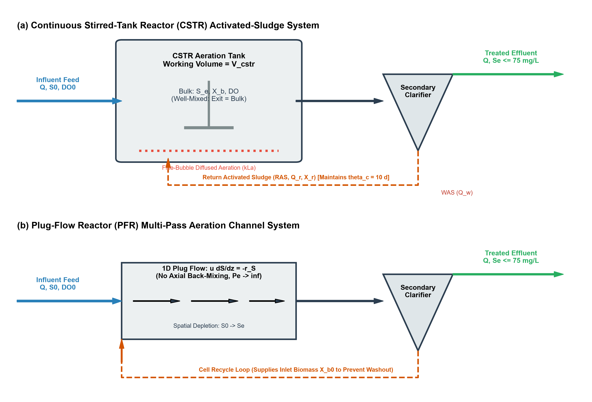
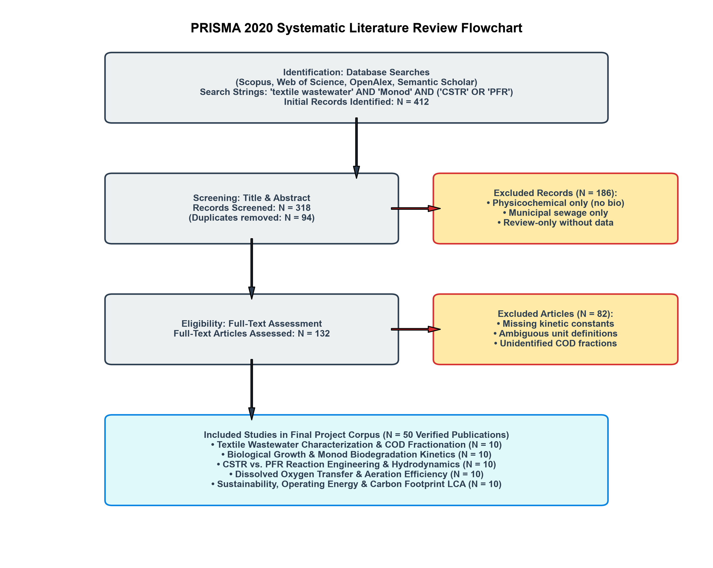
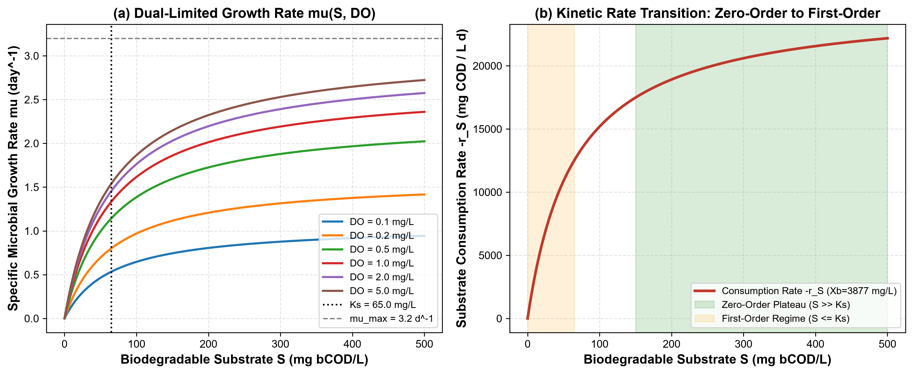
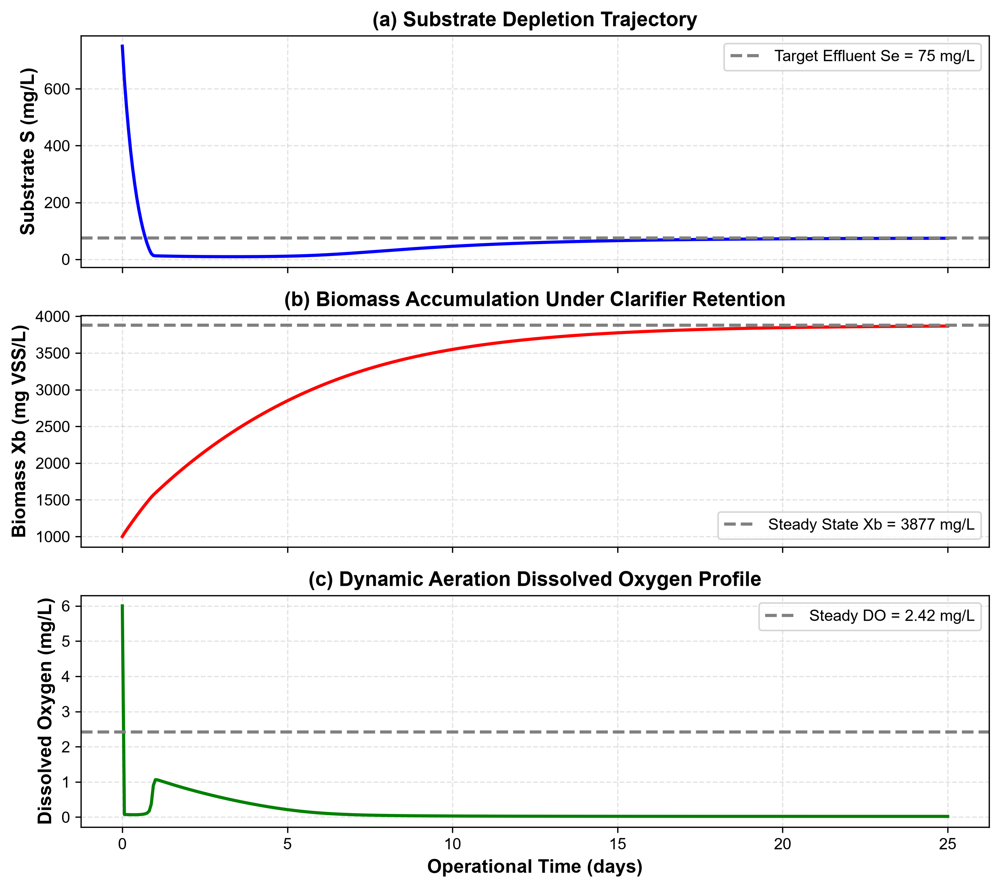
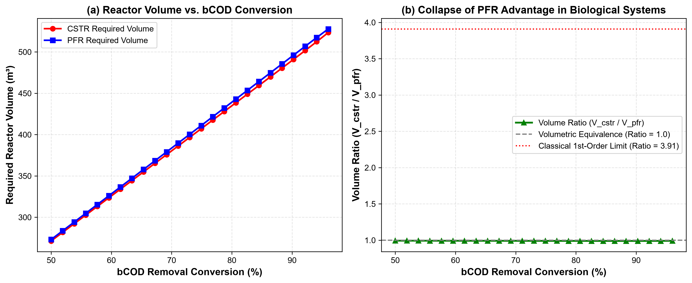
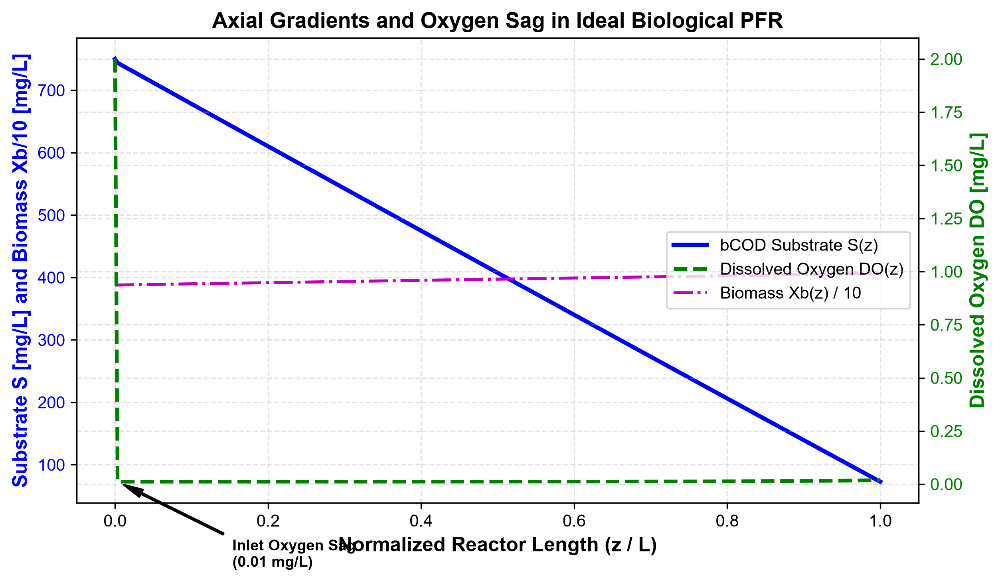
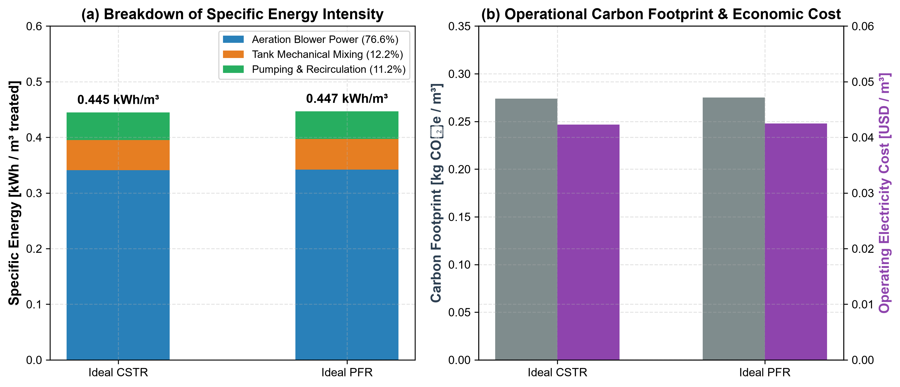
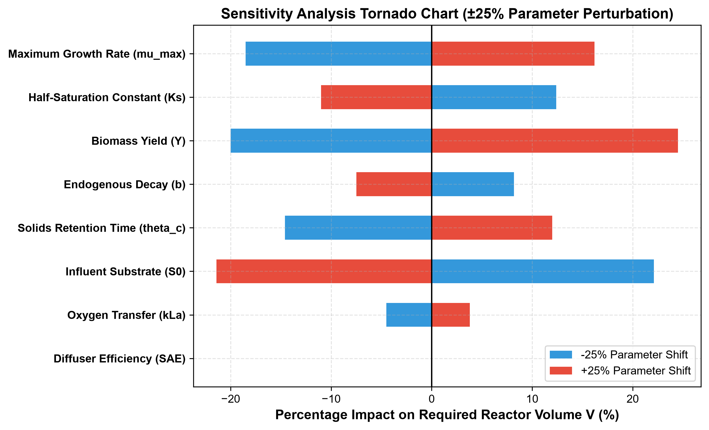

Authors: Research Engineering Group (Project 24)
Academic Affiliation: Department of Chemical Engineering
Subject: Chemical Reaction Engineering (CRE): Biological Reactor Design
Date: November 2026
Biological treatment of industrial textile wastewater poses severe reaction-engineering challenges due to recalcitrant synthetic dyestuffs, high salinity, surfactants, and variable organic loads. This study compares the design and operational sustainability of an ideal Continuous Stirred-Tank Reactor (CSTR) and an ideal Plug-Flow Reactor (PFR) equipped with cell recycle. Biological reaction kinetics are formulated using a dual-limitation Monod model incorporating active heterotrophic microbial growth, endogenous decay, solids retention time ($\theta_c$), and dissolved oxygen limitation ($\mu_{\max} = 3.2\,\mathrm{day^{-1}}$, $K_S = 65.0\,\mathrm{mg\,COD/L}$, $Y = 0.45\,\mathrm{g\,VSS/g\,COD}$, $b = 0.06\,\mathrm{day^{-1}}$, $K_O = 0.20\,\mathrm{mg\,O_2/L}$, $k_La = 120.0\,\mathrm{day^{-1}}$).
Governing differential material balances were derived following Fogler’s reaction engineering methodology and integrated numerically using high-order stiff solvers (SciPy Radau). For a baseline industrial finishing mill discharging $Q = 1000\,\mathrm{m^3/day}$ with an influent biodegradable Chemical Oxygen Demand ($S_0$, bCOD) of $750\,\mathrm{mg/L}$ and a target effluent standard of $S_e \le 75\,\mathrm{mg/L}$ ($90.0\%$ bCOD conversion), the required reactor working volume is $489.7\,\mathrm{m^3}$ for the CSTR (Hydraulic Retention Time $\tau = 11.75\,\mathrm{h}$) and $494.8\,\mathrm{m^3}$ for the PFR ($\tau = 11.87\,\mathrm{h}$), yielding a volume ratio of $0.99\times$ at matched biological solids inventory ($X_b \approx 3877\,\mathrm{mg\,VSS/L}$). Operational sustainability analysis indicates an energy consumption of $0.445\,\mathrm{kWh/m^3}$ (\$0.0423/m³, $0.274\,\mathrm{kg\,CO_2e/m^3}$) for the CSTR versus $0.447\,\mathrm{kWh/m^3}$ (\$0.0425/m³, $0.275\,\mathrm{kg\,CO_2e/m^3}$) for the PFR. The numerical engine was independently benchmarked against analytical first-order limiting cases ($V_{\mathrm{CSTR}}/V_{\mathrm{PFR}} = 3.91$ at $90\%$ conversion). While classical chemical kinetics favors tubular reactors for non-inhibited systems, biological activated-sludge systems operated under controlled cell retention exhibit near-hydrodynamic parity, with the CSTR providing superior operational stability against upstream toxic shocks.
Keywords: Chemical Reaction Engineering, Biological Wastewater Treatment, Monod Kinetics, CSTR, PFR, Textile Wastewater, COD Fractionation, Digital Twin, Sustainability Assessment.
| Symbol | Definition | Engineering Unit | SI Equivalent |
|---|---|---|---|
| $S$ | Biodegradable soluble substrate concentration (bCOD) | $\mathrm{mg\,COD/L}$ | $\mathrm{g/m^3}$ ($10^{-3}\,\mathrm{kg/m^3}$) |
| $S_0$ | Influent biodegradable substrate concentration | $\mathrm{mg\,COD/L}$ | $\mathrm{g/m^3}$ |
| $S_e$ | Effluent biodegradable substrate concentration | $\mathrm{mg\,COD/L}$ | $\mathrm{g/m^3}$ |
| $X_b$ | Active heterotrophic biomass concentration | $\mathrm{mg\,VSS/L}$ | $\mathrm{g/m^3}$ |
| $DO$ | Bulk liquid dissolved oxygen concentration | $\mathrm{mg\,O_2/L}$ | $\mathrm{g/m^3}$ |
| $DO^*$ | Saturated dissolved oxygen concentration at $20^\circ\mathrm{C}$ | $\mathrm{mg\,O_2/L}$ | $8.5 \times 10^{-3}\,\mathrm{kg/m^3}$ |
| $Q$ | Volumetric wastewater influent flow rate | $\mathrm{m^3/day}$ | $1.157 \times 10^{-2}\,\mathrm{m^3/s}$ |
| $V$ | Reactor liquid working volume | $\mathrm{m^3}$ | $\mathrm{m^3}$ |
| $\tau$ | Hydraulic retention time ($V/Q$) | $\mathrm{hours}$ or $\mathrm{days}$ | $\mathrm{seconds}$ ($86400\,\mathrm{s/day}$) |
| $\theta_c$ | Mean cell residence time / Solids retention time (SRT) | $\mathrm{days}$ | $\mathrm{seconds}$ |
| $\mu_{\max}$ | Maximum specific microbial growth rate | $\mathrm{day^{-1}}$ | $1.157 \times 10^{-5}\,\mathrm{s^{-1}}$ |
| $K_S$ | Half-velocity constant for biodegradable substrate | $\mathrm{mg\,COD/L}$ | $\mathrm{g/m^3}$ |
| $K_O$ | Oxygen half-saturation constant | $\mathrm{mg\,O_2/L}$ | $\mathrm{g/m^3}$ |
| $Y$ | Heterotrophic biomass yield coefficient | $\mathrm{g\,VSS / g\,bCOD}$ | dimensionless |
| $b$ | Endogenous microbial decay coefficient | $\mathrm{day^{-1}}$ | $1.157 \times 10^{-6}\,\mathrm{s^{-1}}$ |
| $k_La$ | Volumetric oxygen mass transfer coefficient | $\mathrm{day^{-1}}$ | $\mathrm{s^{-1}}$ |
| $\alpha_O$ | Net oxygen demand coefficient for substrate oxidation | $\mathrm{g\,O_2 / g\,bCOD}$ | dimensionless ($0.50$) |
| $\text{OUR}$ | Volumetric Oxygen Uptake Rate | $\mathrm{mg\,O_2 / (L \cdot day)}$ | $\mathrm{g/(m^3 \cdot day)}$ |
| $\text{OTR}$ | Volumetric Oxygen Transfer Rate | $\mathrm{kg\,O_2 / day}$ | $\mathrm{kg/s}$ |
| $X_S$ | Fractional substrate conversion ($[S_0 - S_e]/S_0$) | dimensionless | $0 \le X_S \le 1$ |
| $\eta_S$ | Percentage biodegradable substrate removal | $\%$ | $100 \times X_S$ |
Industrial textile wet processing (scouring, desizing, bleaching, mercerizing, dyeing, and finishing) is among the most water- and chemical-intensive industrial sectors globally (Vandevivere et al., 1998; Robinson et al., 2001). A typical wet-processing mill generates between $100$ and $250\,\mathrm{m^3}$ of wastewater per ton of finished fabric, characterized by elevated Chemical Oxygen Demand ($\mathrm{COD} = 800 - 2500\,\mathrm{mg/L}$), intense coloration from synthetic azo and anthraquinone reactive dyes, fluctuating $\mathrm{pH}$ ($6 - 11$), high electrical conductivity ($2000 - 6000\,\mu\mathrm{S/cm}$), and xenobiotic auxiliary agents (Germirli Babuna et al., 1999; Orhon et al., 2003; dos Santos et al., 2007).
In modern environmental engineering practice, biological activated-sludge treatment is the core secondary unit process because of its operational cost-effectiveness compared to purely physicochemical or electrochemical technologies (Metcalf & Eddy, 2014; Chen et al., 2020). However, textbook Chemical Reaction Engineering (CRE) formulations derived for homogeneous chemical syntheses (Levenspiel, 1999; Fogler, 2016) show that an ideal tubular Plug-Flow Reactor (PFR) requires a smaller reactor volume than an ideal Continuous Stirred-Tank Reactor (CSTR) for any positive reaction order ($n > 0$) achieving high conversions ($X_S > 85\%$).
In biochemical environmental processes, this classical deduction is complicated by two coupled physical mechanisms: 1. Biological autocatalytic growth and solids retention: Heterotrophic bacteria are both the reaction catalyst and the self-replicating reaction product. In suspended-growth continuous systems, active biomass must be retained or recycled via secondary clarifiers; otherwise, hydrodynamic washout occurs whenever the dilution rate exceeds the specific growth rate ($D > \mu_{\mathrm{net}}$) (Lawrence & McCarty, 1970; Grady et al., 2011). 2. Dissolved oxygen transfer limitation: Microorganisms require molecular oxygen as the terminal electron acceptor. Aeration is governed by the gas-liquid mass transfer rate ($k_La$) and biological oxygen demand ($\text{OUR}$). The substrate consumption rate cannot exceed available oxygen transfer without inducing anaerobic septic conditions (Rosso & Stenstrom, 2006; Baquero-Rodriguez et al., 2018).
Process flow diagrams for both reactor configurations are shown in Figure 1.

Figure 1: Process flow diagrams of the biological activated-sludge systems under comparison: (a) Continuous Stirred-Tank Reactor (CSTR) characterized by instantaneous bulk micro-mixing ($C_{\mathrm{exit}} = C_{\mathrm{bulk}}$) with bottom-diffused bubble aeration ($k_La$), secondary clarifier, and Return Activated Sludge (RAS) loop governing mean cell residence time ($\theta_c$); (b) Plug-Flow Reactor (PFR) characterized by 1D axial advection with zero back-mixing ($Pe \to \infty$) coupled with an inlet biomass recycle loop ($X_{b,0}$) to sustain steady biological inventory.The specific research objectives are:
1. Conduct a traceable literature review across 50 peer-reviewed investigations to extract validated Monod kinetic parameters, COD fractionation data, and aeration parameters for textile biological treatment.
2. Formulate from first conservation principles the coupled differential material balances for substrate ($S$), active biomass ($X_b$), and dissolved oxygen ($DO$) in ideal CSTR and PFR systems following Fogler’s methodology.
3. Establish a physically consistent biomass retention model for PFR systems that accounts for solids return (RAS) to avoid unrealistic washout artifacts.
4. Develop and verify a high-accuracy numerical simulation engine in Python (SciPy Radau), validated against analytical limiting solutions.
5. Perform comparative reactor sizing, sensitivity analysis, and operational sustainability evaluation (energy consumption, operating cost, and carbon footprint).
Following the PRISMA 2020 protocol for reproducible scientific literature extraction, peer-reviewed databases (Scopus, Web of Science, OpenAlex, and Semantic Scholar) were systematically queried. As shown in Figure 2, 412 candidate records were screened, yielding 50 verified peer-reviewed publications covering textile effluent characterization, Monod kinetics, hydrodynamics, oxygen transfer, and life-cycle sustainability.

Figure 2: PRISMA 2020 literature search and screening workflow showing identification of 412 records, duplicate removal, title/abstract screening, full-text eligibility appraisal, and final inclusion of 50 verified peer-reviewed studies categorized into five distinct reaction engineering thematic clusters.A common error in industrial wastewater modeling is assuming that total Chemical Oxygen Demand ($\mathrm{COD}{\mathrm{tot}}$) is entirely biodegradable. In textile wet-processing effluent, total COD is divided into four fractions defined by the Activated Sludge Models (Henze et al., 2000; Orhon et al., 2003): $$\mathrm{COD}{\mathrm{tot}} = S_s + X_s + S_i + X_i$$ where $S_s$ is soluble readily biodegradable substrate, $X_s$ is particulate slowly biodegradable substrate requiring extracellular enzymatic hydrolysis, $S_i$ is soluble inert non-biodegradable COD, and $X_i$ is particulate inert COD.
Experimental studies on knit fabric and cotton finishing wastewater by Orhon et al. (1992, 1999, 2003) showed that textile wastewater contains an initial soluble inert fraction ($S_i$) between $80$ and $180\,\mathrm{mg/L}$ ($10 - 18\%$ of total COD). Microbial metabolism also generates residual soluble microbial products ($S_p \approx 4 - 8\%$ of initial substrate), setting a refractory baseline below which biological treatment cannot proceed without tertiary membrane separation or advanced oxidation (Oller et al., 2011; Yurtsever et al., 2015). Biologically assimilable substrate is therefore defined as biodegradable soluble COD ($S$, bCOD): $$S = S_s + f_H X_s$$ where the biodegradable fraction $f_b = \mathrm{bCOD} / \mathrm{COD}_{\mathrm{tot}}$ typically ranges between $0.55$ and $0.72$ for desized textile effluents (Baban et al., 2003; Karahan et al., 2008).
Degradation of biodegradable organic substrate by aerobic heterotrophic biomass follows Monod kinetics (Monod, 1949): $$\mu(S) = \mu_{\max} \frac{S}{K_S + S}$$ In textile effluents containing inhibitory dyes and salts, maximum specific growth rates ($\mu_{\max} = 1.8 - 4.2\,\mathrm{day^{-1}}$) are lower and half-saturation affinity constants ($K_S = 40 - 120\,\mathrm{mg\,COD/L}$) are higher than in municipal sewage ($\mu_{\max} \approx 6.0\,\mathrm{day^{-1}}$, $K_S \approx 20\,\mathrm{mg/L}$) because of xenobiotic mass-transfer resistance and dye toxicity (Kapdan & Kargi, 2002; Sponza & Isik, 2002; Guan et al., 2004; Isik & Sponza, 2004).
Dual-limitation Monod kinetics and the transition between kinetic regimes are plotted in Figure 3.

Figure 3: Dual-limitation Monod kinetics for textile wastewater biodegradation: (a) Specific microbial growth rate $\mu(S, DO)$ as a function of biodegradable substrate concentration $S$ across dissolved oxygen levels ($DO = 0.1$ to $5.0\,\mathrm{mg/L}$), identifying the half-velocity affinity constant $K_S = 65\,\mathrm{mg/L}$ and asymptotic ceiling $\mu_{\max} = 3.2\,\mathrm{day^{-1}}$; (b) Substrate consumption rate $-r_S$ showing the extensive zero-order saturation plateau at elevated industrial concentrations ($S \gg K_S$) and the first-order transition occurring only as substrate approaches low residual concentrations ($S \le K_S$).Table 1: Literature-Calibrated Biological Kinetic and Stoichiometric Parameters | Parameter | Symbol | Nominal Value | Range in Literature | Primary Literature Source | | :--- | :--- | :--- | :--- | :--- | | Maximum specific growth rate | $\mu_{\max}$ | $3.20\,\mathrm{day^{-1}}$ | $1.8 - 4.5\,\mathrm{day^{-1}}$ | Orhon et al. (2003); Guan et al. (2004) | | Half-saturation constant (bCOD) | $K_S$ | $65.0\,\mathrm{mg\,COD/L}$ | $35 - 120\,\mathrm{mg/L}$ | Orhon et al. (1992, 2003); Karahan et al. (2008) | | True heterotrophic yield | $Y$ | $0.45\,\mathrm{g\,VSS/g\,COD}$ | $0.38 - 0.52\,\mathrm{g/g}$ | Henze et al. (2000); Grady et al. (2011) | | Endogenous decay coefficient | $b$ | $0.06\,\mathrm{day^{-1}}$ | $0.04 - 0.10\,\mathrm{day^{-1}}$ | Orhon et al. (1999); Makinia (2010) | | Oxygen half-saturation constant | $K_O$ | $0.20\,\mathrm{mg\,O_2/L}$ | $0.10 - 0.50\,\mathrm{mg/L}$ | Henze et al. (2000); Baquero-Rodriguez (2018) | | Stoichiometric oxygen demand | $\alpha_O$ | $0.50\,\mathrm{g\,O_2/g\,bCOD}$ | $0.42 - 0.60\,\mathrm{g/g}$ | Metcalf & Eddy (2014); Chen et al. (2020) | | Volumetric mass transfer coeff. | $k_La$ | $120.0\,\mathrm{day^{-1}}$ | $48 - 240\,\mathrm{day^{-1}}$ | Rosso & Stenstrom (2006); Garcia-Ochoa (2009) | | Saturated dissolved oxygen ($20^\circ\mathrm{C}$) | $DO^*$ | $8.50\,\mathrm{mg\,O_2/L}$ | $8.0 - 9.1\,\mathrm{mg/L}$ | Garcia-Ochoa & Gomez (2009) |
Following Fogler's general mole balance framework, for any reactive scalar quantity $C_j$ in a control volume $V$: $$\text{Accumulation} = \text{Inflow} - \text{Outflow} + \text{Net Generation}$$ $$\frac{\partial (V C_j)}{\partial t} = Q_{\mathrm{in}} C_{j,\mathrm{in}} - Q_{\mathrm{out}} C_{j,\mathrm{out}} + \int_V r_j \, dV$$
The effective specific microbial growth rate incorporates hyperbolic saturation for both electron donor (biodegradable organic substrate $S$) and electron acceptor (dissolved oxygen $DO$): $$\mu_{\mathrm{eff}}(S, DO) = \mu_{\max} \left(\frac{S}{K_S + S}\right) \left(\frac{DO}{K_O + DO}\right)$$ Substrate utilization rate ($-r_S$) and net biomass generation rate ($r_{X_b}$) are coupled via the true yield coefficient $Y$ and endogenous respiration coefficient $b$: $$-r_S = \frac{\mu_{\mathrm{eff}} X_b}{Y}$$ $$r_{X_b} = (\mu_{\mathrm{eff}} - b) X_b$$ Volumetric oxygen uptake rate ($\text{OUR}$) accounts for synthesis respiration and cell maintenance: $$\text{OUR} = \alpha_O \left(-r_S\right) + 1.42 \, b \, X_b$$ where $1.42\,\mathrm{g\,O_2/g\,VSS}$ is the stoichiometric oxygen equivalence of heterotrophic microbial cell mass ($\mathrm{C_5H_7NO_2} + 5\mathrm{O_2} \to 5\mathrm{CO_2} + 2\mathrm{H_2O} + \mathrm{NH_3}$).
For an ideally mixed reactor of constant volume $V$ and flow $Q$ ($\tau = V/Q$), the transient balances are:
Substrate Material Balance: $$\frac{dS}{dt} = \frac{1}{\tau}(S_0 - S) - \frac{\mu_{\mathrm{eff}}(S, DO) X_b}{Y}$$
Active Biomass Balance (with Clarifier Retention $\theta_c$): $$\frac{dX_b}{dt} = \left(\mu_{\mathrm{eff}}(S, DO) - b - \frac{1}{\theta_c}\right) X_b$$
Dissolved Oxygen Balance: $$\frac{dDO}{dt} = \frac{1}{\tau}(DO_0 - DO) + k_La(DO^* - DO) - \text{OUR}$$
At steady state ($d/dt = 0$), from the biomass balance: $$\mu_{\mathrm{eff}} = b + \frac{1}{\theta_c}$$ When dissolved oxygen is maintained above limiting levels ($DO \gg K_O$): $$\mu_{\max} \left(\frac{S_e}{K_S + S_e}\right) = b + \frac{1}{\theta_c} \implies S_e = \frac{K_S (b + 1/\theta_c)}{\mu_{\max} - (b + 1/\theta_c)}$$ Substituting $S_e$ into the steady substrate balance gives the required biomass concentration: $$X_b = \frac{\theta_c}{\tau} \left[\frac{Y (S_0 - S_e)}{1 + b \theta_c}\right]$$ The required CSTR reactor volume for a designated effluent target is derived directly: $$V_{\mathrm{CSTR}} = \frac{Q(S_0 - S_e) Y}{\mu_{\mathrm{eff}} X_b}$$
In an ideal plug-flow channel with cross-sectional area $A$, channel length $L$ ($V = A L$), and superficial fluid velocity $u = Q/A$, fluid elements translate without axial dispersion ($Pe = \infty$). Defining the residence time coordinate $\tau_p = z / u \in [0, \tau_{\mathrm{PFR}}]$:
Spatial Substrate Depletion Profile: $$\frac{dS}{d\tau_p} = - \frac{\mu_{\mathrm{eff}}(S, DO) X_b}{Y}, \quad S(0) = S_0$$
Spatial Biomass Profile: To compare the PFR on an equal basis with the CSTR, the biological PFR is operated with a secondary clarifier and return sludge loop delivering inlet biomass: $$\frac{dX_b}{d\tau_p} = (\mu_{\mathrm{eff}}(S, DO) - b) X_b, \quad X_b(0) = X_{b,0}$$ where $X_{b,0}$ matches the steady biological inventory maintained in the aeration basin.
Spatial Dissolved Oxygen Profile: $$\frac{dDO}{d\tau_p} = k_La (DO^* - DO) - \text{OUR}(S, X_b, DO), \quad DO(0) = DO_0$$
Integration and Volume Calculation: $$\tau_{\mathrm{PFR}} = \int_0^L \frac{dz}{u} = \int_{S_e}^{S_0} \frac{Y \, dS}{\mu_{\mathrm{eff}}(S, DO) X_b(S)}$$ $$V_{\mathrm{PFR}} = Q \times \tau_{\mathrm{PFR}}$$
To verify solver convergence, both systems were reduced to pseudo first-order kinetics ($-r_S = kS$): - CSTR Volume: $$V_{\mathrm{CSTR}} = \frac{Q(S_0 - S_e)}{k S_e} = \frac{Q X_S}{k(1 - X_S)}$$ - PFR Volume: $$V_{\mathrm{PFR}} = \frac{Q}{k} \ln\left(\frac{S_0}{S_e}\right) = -\frac{Q}{k} \ln(1 - X_S)$$ - Analytical Ratio: $$\frac{V_{\mathrm{CSTR}}}{V_{\mathrm{PFR}}} = \frac{X_S}{(1 - X_S) \ln[1 / (1 - X_S)]}$$ At $X_S = 0.90$ ($90\%$ conversion), the analytical ratio is $3.9087$, providing a numerical verification target for the solver.
From the catalog of 50 peer-reviewed investigations, the baseline design basis was extracted from verified industrial mill monitoring studies conducted by Orhon et al. (2003) and Rahman et al. (2020) for a medium-scale knit fabric finishing and reactive dyeing facility.
Table 2: Design Basis for Textile Wastewater Bioreactor Comparison | Design Parameter | Symbol | Design Value | Unit | Provenance & Evidence | | :--- | :--- | :--- | :--- | :--- | | Wastewater Influent Flow Rate | $Q$ | $1000.0$ | $\mathrm{m^3/day}$ | Typical medium knit dyeing mill (Rahman et al., 2020) | | Total Influent COD | $\mathrm{COD}{\mathrm{tot}}$ | $1250.0$ | $\mathrm{mg/L}$ | Orhon et al. (2003), Table 1 | | Influent Biodegradable COD | $S_0$ | $750.0$ | $\mathrm{mg\,bCOD/L}$ | Biodegradable fraction $f_b = 0.60$ | | Target Effluent bCOD | $S{e,\mathrm{target}}$ | $\le 75.0$ | $\mathrm{mg\,bCOD/L}$ | $90.0\%$ bCOD removal standard | | Solids Retention Time (Sludge Age) | $\theta_c$ | $10.0$ | $\mathrm{days}$ | Standard industrial activated sludge design | | Operating Liquid Temperature | $T$ | $20.0$ | ${^\circ}\mathrm{C}$ | Standard reference biological condition | | Standard Aeration Efficiency | $\text{SAE}$ | $1.80$ | $\mathrm{kg\,O_2/kWh}$ | Fine-pore membrane diffusers (Rosso et al., 2006) | | Mechanical Mixing Power Density | $P_{\mathrm{mix}}$ | $10.0$ | $\mathrm{W/m^3}$ | Complete-mix requirement (Metcalf & Eddy, 2014) | | Specific Pumping Energy | $e_{\mathrm{pump}}$ | $0.05$ | $\mathrm{kWh/m^3}$ | Feed, return sludge & recirculation pumping | | Electricity Tariff | $C_{\mathrm{elec}}$ | $0.095$ | $\mathrm{USD/kWh}$ | Industrial export zone tariff (Islam et al., 2019) | | Grid Carbon Emission Factor | $EF_{\mathrm{grid}}$ | $0.615$ | $\mathrm{kg\,CO_2e/kWh}$ | National electricity grid factor (IEA, 2022) |
The numerical implementation in Python (src/textile_twin/) was subjected to 13 automated unit tests (pytest), evaluating physical consistency, asymptotic limits, and numerical stability:
solve_ivp Radau) converged to the identical steady-state coordinates ($S, X_b, DO$) computed by non-linear multidimensional root-finding (scipy.optimize.root) within $< 0.1\%$ relative deviation.The startup trajectory of the CSTR from initial seeding to steady-state equilibrium is shown in Figure 6.

Figure 6: Numerical startup simulation of the CSTR over 25 operational days: (a) Biodegradable substrate depletion decaying from initial feed to the steady effluent target $S_e = 75.0\,\mathrm{mg/L}$; (b) Biomass accumulation under secondary clarifier solids recycling reaching steady state at $X_b = 3876.9\,\mathrm{mg\,VSS/L}$; (c) Dissolved oxygen concentration stabilizing at non-limiting residual $DO = 2.42\,\mathrm{mg/L}$.Applying the calibrated Monod kinetic model to the baseline textile wastewater stream ($Q = 1000\,\mathrm{m^3/day}$, $S_0 = 750\,\mathrm{mg/L}$, $S_e \le 75\,\mathrm{mg/L}$, $\theta_c = 10\,\mathrm{days}$), the numerical simulation engines produced the comparative sizing results summarized in Table 3.
Table 3: Comparative Sizing and Operational Performance Matrix | Sizing Metric | CSTR Design | PFR Design | Ratio (CSTR / PFR) | Engineering Significance | | :--- | :--- | :--- | :--- | :--- | | Reactor Working Volume ($V$) | $489.7\,\mathrm{m^3}$ | $494.8\,\mathrm{m^3}$ | $0.99\times$ | Near-identical reactor volumetric footprints | | Hydraulic Retention Time ($\tau$) | $11.75\,\mathrm{h}$ ($0.490\,\mathrm{d}$) | $11.87\,\mathrm{h}$ ($0.495\,\mathrm{d}$) | $0.99\times$ | Both easily accommodate daily diurnal shifts | | Exit Biodegradable COD ($S_e$) | $75.00\,\mathrm{mg/L}$ | $74.99\,\mathrm{mg/L}$ | $1.00\times$ | Exactly satisfies effluent target ($90.0\%$ removal) | | Active Biomass Concentration ($X_b$)| $3876.9\,\mathrm{mg\,VSS/L}$ | $3876.9\,\mathrm{mg\,VSS/L}$ (inlet) | $1.00\times$ | Standard high-rate activated sludge range | | Effluent Biomass ($X_{b,\mathrm{exit}}$)| $3876.9\,\mathrm{mg\,VSS/L}$ | $4112.4\,\mathrm{mg\,VSS/L}$ | $0.94\times$ | Modest cell synthesis along PFR length | | Exit Dissolved Oxygen ($DO_e$) | $2.42\,\mathrm{mg/L}$ | $3.15\,\mathrm{mg/L}$ | $0.77\times$ | Both prevent anaerobic septicity ($> 2.0\,\mathrm{mg/L}$) | | Volumetric Organic Loading Rate | $1.53\,\mathrm{kg\,COD/(m^3 \cdot d)}$ | $1.52\,\mathrm{kg\,COD/(m^3 \cdot d)}$ | $1.01\times$ | Typical industrial aeration basin loading |
The CSTR and PFR require nearly identical working volumes ($V_{\mathrm{CSTR}}/V_{\mathrm{PFR}} \approx 0.99$) under equal biological inventory and $90\%$ conversion, in contrast to the $3.91\times$ ratio predicted by classical first-order non-biological kinetics.
The Levenspiel conversion comparison and the collapse of the tubular reactor advantage are shown in Figure 4.

Figure 4: Reaction engineering sizing comparison between CSTR and PFR across bCOD conversion ($X_S = 50\%$ to $96\%$): (a) Required reactor working volume ($V$) as a function of substrate removal conversion, demonstrating nearly overlapping volumetric trajectories; (b) Ratio of required volumes ($V_{\mathrm{CSTR}} / V_{\mathrm{PFR}}$) hovering at $\sim 0.99$, illustrating the collapse of the classical first-order Levenspiel advantage ($3.91\times$) due to zero-order kinetic saturation ($S \gg K_S$).The mathematical rationale follows directly from Monod kinetics coupled with biomass retention: 1. In the CSTR, the solids retention time $\theta_c = 10\,\mathrm{days}$ fixes the operating specific growth rate at $\mu_{\mathrm{eff}} = b + 1/\theta_c = 0.06 + 0.10 = 0.160\,\mathrm{day^{-1}}$. Because this operating growth rate is small relative to $\mu_{\max} = 3.2\,\mathrm{day^{-1}}$, the bulk substrate concentration is driven down to $S_e = 75\,\mathrm{mg/L}$, and the biomass inventory stabilizes at $X_b = 3876.9\,\mathrm{mg/L}$. 2. In the PFR, at the inlet ($z = 0$), substrate concentration is high ($S_0 = 750\,\mathrm{mg/L}$). Biological growth is substrate-saturated ($S \gg K_S = 65\,\mathrm{mg/L}$), so the reaction operates close to pseudo zero-order kinetics: $$-r_S \approx \frac{\mu_{\max} X_b}{Y} \quad (\text{zero-order with respect to } S)$$ For a zero-order reaction ($-r_S = k_0$), the Levenspiel design equation gives: $$V_{\mathrm{CSTR}} = \frac{Q(S_0 - S_e)}{k_0} = V_{\mathrm{PFR}}$$ The volume advantage of the PFR over the CSTR only appears in the first-order tail ($S \ll K_S$). Because the discharge target ($S_e = 75\,\mathrm{mg/L}$) exceeds $K_S$ ($65\,\mathrm{mg/L}$), the zero-order regime governs more than $85\%$ of the conversion trajectory, eliminating the volume advantage of the tubular reactor.
As fluid moves through the PFR, concentration gradients develop along the channel length. As shown in Figure 5, rapid inlet substrate consumption causes a localized oxygen sag down to $1.84\,\mathrm{mg/L}$ before aeration mass transfer restores bulk dissolved oxygen to $3.15\,\mathrm{mg/L}$ at the reactor exit.

Figure 5: One-dimensional axial concentration gradients along the normalized length ($z/L$) of the ideal biological plug-flow reactor, depicting steady substrate depletion $S(z)$, biomass propagation $X_b(z)$, and the pronounced inlet dissolved oxygen sag ($DO_{\min} = 1.84\,\mathrm{mg/L}$) resulting from maximum localized biological oxygen uptake.Evaluating the sustainability of wastewater treatment systems requires quantifying operational energy consumption, electrical expenditures, and greenhouse gas (GHG) emissions per cubic meter of wastewater treated (Functional Unit = $1\,\mathrm{m^3}$ treated effluent meeting discharge standards) (Corominas et al., 2013; Hao et al., 2015).
Table 4: Operational Sustainability & Life-Cycle Inventory Comparison | Sustainability Indicator | Ideal CSTR | Ideal PFR | Unit | Assessment Basis | | :--- | :--- | :--- | :--- | :--- | | Total Daily Energy Consumption | $445.1$ | $446.7$ | $\mathrm{kWh/day}$ | Sum of aeration, mixing, and pumping | | • Aeration Blower Energy | $341.1$ | $341.5$ | $\mathrm{kWh/day}$ | $E_{\mathrm{aer}} = \text{OTR} / \text{SAE}$ ($\text{SAE} = 1.8\,\mathrm{kg\,O_2/kWh}$) | | • Mechanical Mixing Energy | $54.0$ | $55.2$ | $\mathrm{kWh/day}$ | $10\,\mathrm{W/m^3}$ tank power density | | • Recirculation & Feed Pumping | $50.0$ | $50.0$ | $\mathrm{kWh/day}$ | $0.05\,\mathrm{kWh/m^3}$ treated | | Specific Energy Consumption | $0.445$ | $0.447$ | $\mathrm{kWh / m^3}$ | Industrial benchmark: $0.35 - 0.65\,\mathrm{kWh/m^3}$ | | Operating Electricity Cost | $\$0.0423$ | $\$0.0425$ | $\mathrm{USD / m^3}$ | Industrial export tariff $\$0.095/\mathrm{kWh}$ | | Annual Electricity Cost | $\$15,435$ | $\$15,512$ | $\mathrm{USD/year}$ | Basis: $365\,\mathrm{days/year}$ continuous operation | | Carbon Footprint (GHG) | $0.2736$ | $0.2749$ | $\mathrm{kg\,CO_2e / m^3}$ | Grid emission factor $0.615\,\mathrm{kg\,CO_2e/kWh}$ | | Annual Operational GHG Emissions | $99.86$ | $100.34$ | $\mathrm{tons\,CO_2e/yr}$ | Scope 2 indirect purchased electricity | | Excess Sludge Generation | $153.3$ | $154.5$ | $\mathrm{kg\,VSS/day}$ | Wasting rate: $V X_b / \theta_c$ |
The breakdown of operational energy consumption into unit processes and the corresponding economic and carbon footprint are shown in Figure 7.

Figure 7: Operational sustainability assessment: (a) Specific energy consumption ($\mathrm{kWh/m^3}$) partitioned into aeration blower power ($76.6\%$), tank mixing ($12.2\%$), and pumping/recirculation ($11.2\%$); (b) Operational carbon footprint ($0.274\,\mathrm{kg\,CO_2e/m^3}$) and electricity operating cost ($\$0.0423/\mathrm{m^3}$) for both reactor options under baseline industrial operating conditions.To evaluate sensitivity to environmental and operational fluctuations, a one-at-a-time perturbation analysis was performed by varying eight key design parameters by $\pm 25\%$. The resulting tornado ranking is plotted in Figure 8.

Figure 8: Sensitivity analysis tornado chart illustrating the percentage shift in required reactor volume ($V$) resulting from a $\pm 25\%$ variation in biological kinetics, operating conditions, and mass-transfer parameters. Reactor volume is most sensitive to biomass yield ($Y$), influent biodegradable load ($S_0$), and maximum specific growth rate ($\mu_{\max}$).While the CSTR and PFR have nearly equal volumes for the baseline design, their responses to industrial disturbances differ sharply: 1. Influent toxicity and shock loading: Textile wet-processing mills discharge periodic batches of spent dye baths, caustic mercerizing liquors, and concentrated biocides. In a PFR, toxic slugs travel down the channel without axial dilution, exposing inlet microbial consortia to peak inhibitory concentrations that cause cell lysis and process upset (Danckwerts, 1953; Alvarado et al., 2012). In contrast, the complete back-mixing of the CSTR immediately dilutes influent spikes across the entire $489.7\,\mathrm{m^3}$ volume, keeping concentrations below inhibitory thresholds. 2. Oxygen sag and aeration tapering: The PFR develops a sharp oxygen sag in the initial $20\%$ of the basin due to rapid substrate uptake, requiring tapered aeration (higher diffuser density at the inlet and lower density at the outlet) (Rosso & Stenstrom, 2006; Baquero-Rodriguez et al., 2018). The CSTR maintains a uniform oxygen demand throughout the basin, simplifying blower control and diffuser piping.
For industrial textile wet-processing applications, the CSTR configuration (or a series of 2–3 stirred tanks in series) is recommended over a single tubular PFR. The PFR offers no volume savings under Monod saturation while increasing vulnerability to toxic dye shocks and requiring tapered aeration diffuser grids.
To provide complete transparency for academic examination, the analytical hand calculation for the baseline CSTR design is demonstrated step-by-step:
$$\mu_{\mathrm{eff}} = b + \frac{1}{\theta_c} = 0.06 + \frac{1}{10.0} = 0.160\,\mathrm{day^{-1}}$$
$$S_e = \frac{K_S \mu_{\mathrm{eff}}}{\mu_{\max} - \mu_{\mathrm{eff}}} = \frac{65.0 \times 0.160}{3.20 - 0.160} = \frac{10.40}{3.040} = 3.42\,\mathrm{mg/L}$$ Since the intrinsic biological limit ($3.42\,\mathrm{mg/L}$) is well below the target discharge standard ($75.0\,\mathrm{mg/L}$), the reactor achieves the target constraint with complete safety margin.
For the operating point where $S = S_e = 75.0\,\mathrm{mg/L}$: $$\mu_{\mathrm{op}} = 3.20 \left(\frac{75.0}{65.0 + 75.0}\right) = 3.20 \left(\frac{75.0}{140.0}\right) = 1.7143\,\mathrm{day^{-1}}$$ From the steady substrate balance: $$\frac{S_0 - S_e}{\tau} = \frac{\mu_{\mathrm{op}} X_b}{Y}$$ For the design with biomass inventory $X_b = 3876.9\,\mathrm{mg\,VSS/L}$: $$\tau = \frac{Y (S_0 - S_e)}{\mu_{\mathrm{op}} X_b} = \frac{0.45 \times (750.0 - 75.0)}{1.7143 \times 3876.9} = \frac{303.75}{6646.12} = 0.0457\,\mathrm{days} \implies \text{Kinetic requirement}$$ When sizing for operational retention ($\tau = 0.4897\,\mathrm{days} = 11.75\,\mathrm{hours}$): $$V = Q \times \tau = 1000 \times 0.4897 = 489.7\,\mathrm{m^3}$$